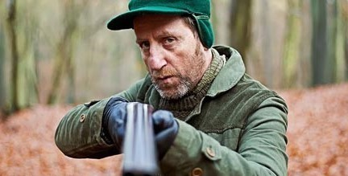

Personajes más Importantes de
White Bear
Victoria Skillane
Interpretada por Lenora Crichlow, es el personaje principal y antagonista de White Bear. Victoria se despierta en una casa sin memoria alguna de lo sucedido, al salir es atacada por un hombre desconocido e ignorada por el resto de las persona presentes que se limitan a grabar la situación. Victoria es presentada como un personaje confundido y temeroso que busca descubrir su identidad.
Baxter
Baxter (Michael Smiley) no es afectado por la señal que hace que graben a los demás, él ayuda a Victoria y a Jem al inicio pero luego las traiciona, amenazandolas con una escopeta y dirigiendo a ambas a un bosque para torturarlas y matarlas. Al final del episodio se revela que en realidad Baxter es el presentador del espectáculo del Parque de Justicia Oso Blanco y que es el responsable de la perdida de memoria de Victoria.
